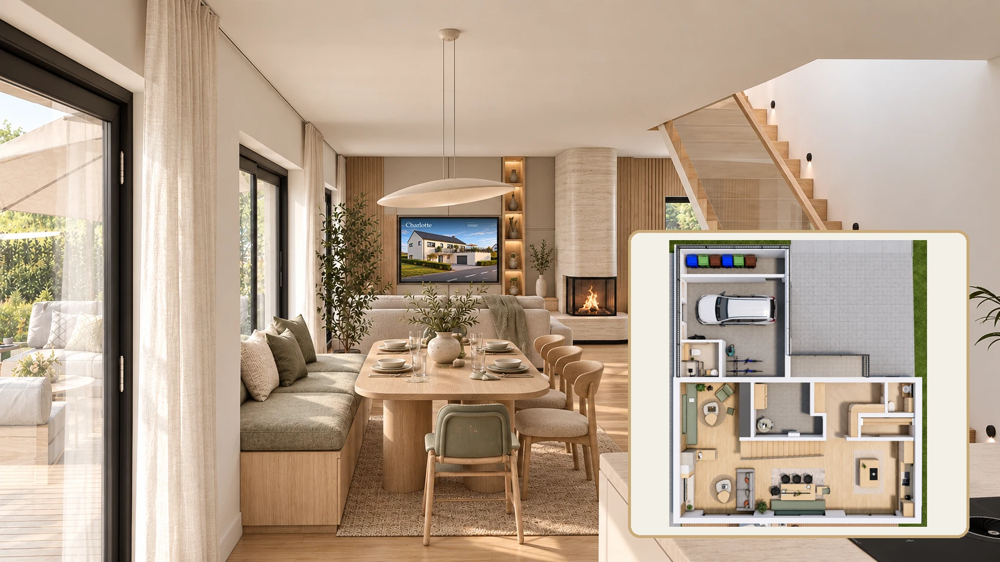

Casa Charlotte · Interiors & floor plans
Japandi interior visualization paired with the furnished floor plan to communicate both atmosphere and layout.

Japandi interior visualization paired with the furnished floor plan to communicate both atmosphere and layout.
